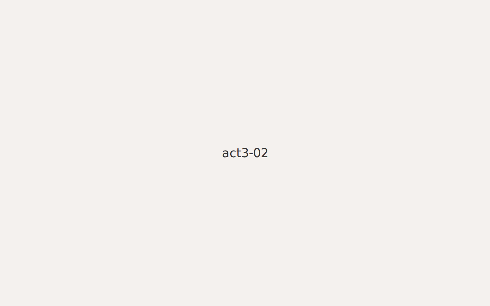
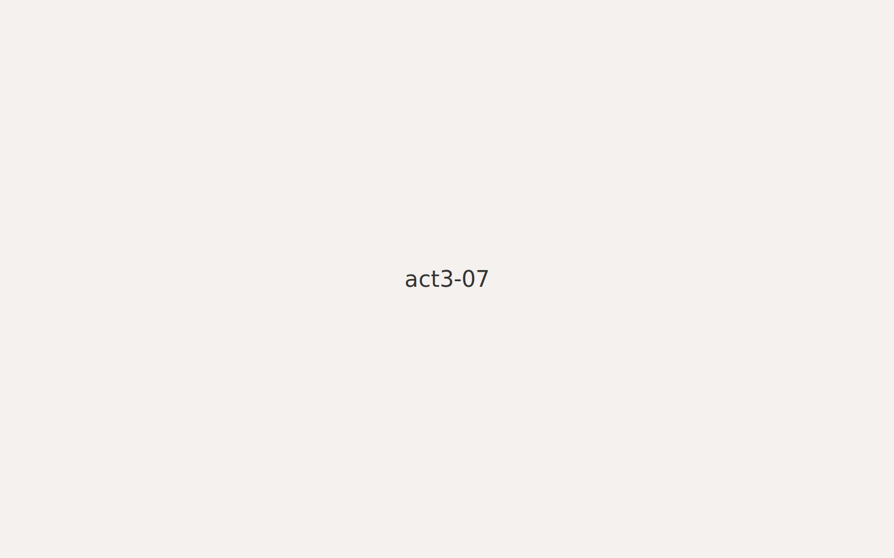

← Back to Hub
Act III — Between Two Worlds
Brothers playing in the park.

School books and late nights.
Homework by lamplight.
City alley, late evening.
Hands on a book, two tongues.
Neighborhood corner meetings.

Two friends, new jokes.
Night bus rides home.
1
2
3
4
5
6
7
8
↑ Top